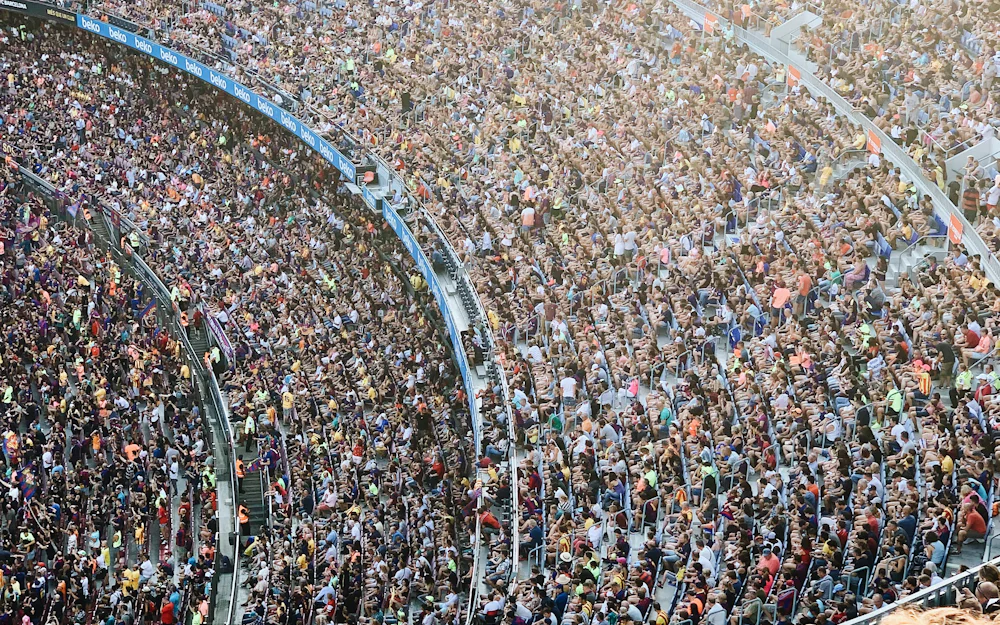
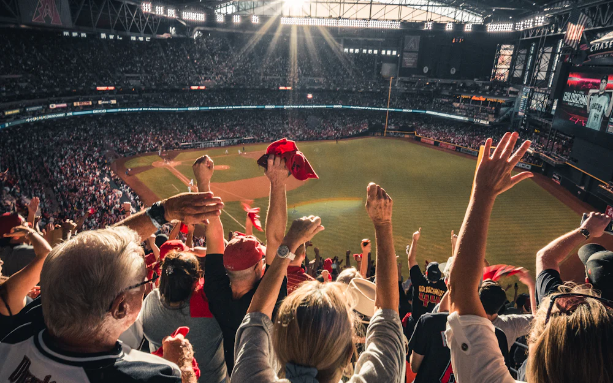

Mercadeo deportivo · Servicio
¿Garantizas papel toilette en el baño durante tus eventos deportivos?
27 de abril de 2026

Recuerdo que en la década de los 90, en las competencias deportivas, ir al baño era toda una odisea y hasta un lujo. Encontrar papel toilette era una ilusión. Que hubiera agua, más de lo mismo. 😢
A veces te encontrabas espacios vacíos, sin inodoros. Además, los baños tenían botes de agua y no podías cambiarte allí. Si competías con el karategui sucio, ya estabas descalificado. 😢
Para la próxima Copa FIFA, una empresa ubicada en Atlanta (Georgia, EE. UU.) comenta que mantener los baños en las mejores condiciones es un desafío sin precedentes, y propone tomar en cuenta, entre otros aspectos:
- Protocolo de "renovación rápida" de baños: mucha gente los usará durante el evento, a veces más de una vez. En eventos de alta afluencia, el ciclo debe ser cada 20 minutos. ¡Sí, cada 20 minutos hay que revisar, reponer y limpiar! 😮
- Mantenimiento visual y olfativo: retirar las bolsas de basura cuando estén llenas entre un 50 % y un 75 %, sin dejar que las papeleras se reboseen, y usar desodorantes de grado comercial para neutralizar los olores en su origen.
Colocar papel toilette es una forma muy gentil, y pragmática, de decirle a la gente "me importas". Es estar en los detalles.
Si estás pendiente del papel toilette, estás pendiente de muchos detalles más. Y así aumentas tu probabilidad de éxito.
Referencia: Globe Chemical Company, protocolo de limpieza para el Mundial 2026 en Atlanta.
Marca · Mercadeo deportivo
Venezuela como una marca deportiva
20 de marzo de 2026

Hoy, conectar como marca es condición sine qua non. Si la marca es deportiva, aún más, porque las marcas deportivas generan con absoluta naturalidad un fanatismo que tiene un aspecto clave:
Tu equipo gana, te quedas con él. Tu equipo empata, te quedas con él. Tu equipo pierde, te quedas con él.
Esto no sucede con otro tipo de marca. Ahora, si la marca deportiva es un país entero, te cuento hasta dónde puede llegar ese entusiasmo y esa energía.
Estratégicamente vimos un pitcheo dominante, un bateo ajustado a cada bateador del equipo contrario, blindaje en la defensa, una mentalidad con hambre de victoria y conciencia de equipo, liderada por Omar López, quien hizo ajustes con precisión casi quirúrgica.
Y no puedo dejar por fuera la fe y la gratitud, esta última la fortaleza más desarrollada de los venezolanos. ¿A cuántos jugadores, en un close-up, les pudimos leer en los labios un "Gracias, Papá Dios"?
Este martes un país entero se paralizó: plazas, avenidas, locales comerciales, hogares. En este mundial, la gran marca Venezuela enseñó a muchos a gritar "¡Poooonche, poooonche!" como un ritual cuando ya había dos strikes.
El resultado: Venezuela se transformó en el nuevo campeón del Clásico Mundial de Béisbol. Veamos este ejemplo como un caso de estudio que podría llamarse "Ganar por diseño". Ya conocemos la fórmula; vamos a repetirla con los ajustes que cada caso requiera.
Reflexión · Servicio en salud
Ingenieros y artistas del servicio
30 de julio de 2025
El Dr. Denis Cortese, de la Clínica Mayo, cuenta que un domingo, al buscar su carro alquilado en el aeropuerto de Minneapolis, encontró en el parabrisas una nota escrita a mano. Era de una mujer que reconoció su nombre: él había tratado a su padre quince años atrás. Ese día ella viajaba al funeral de su papá, y aun así se tomó el tiempo de agradecerle.
De esa experiencia, Cortese explica que los mejores médicos son en parte ingenieros y en parte artistas. El ingeniero ve el problema y aplica la tecnología para resolverlo: es medible y visible. El artista sabe cuándo la persona necesita una sonrisa cálida, unas palabras tranquilizadoras o un abrazo.
"Lo que el artista hace es lo que me hizo médico." · Denis Cortese (2002)
En cualquier empresa de servicios pasa lo mismo. La técnica resuelve el problema; el arte hace que la persona se sienta bienvenida, segura y cuidada. Y es el arte lo que la gente recuerda años después.